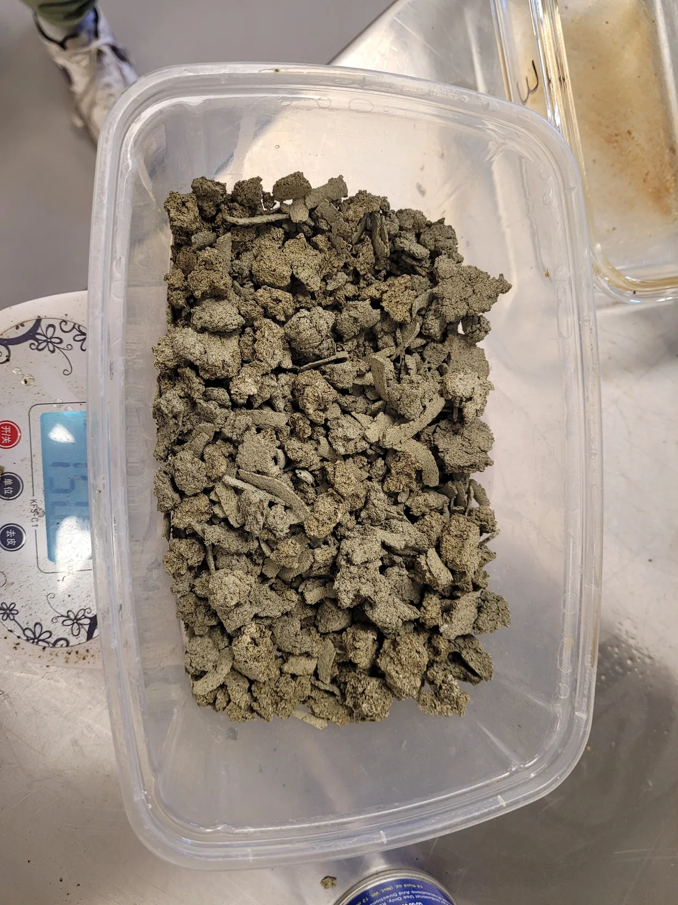

By 2025 the project had a kelp composite that worked on the bench. What it did not have was kelp. This article comes from the 2025 year-end review.
There was no seaweed fibre industry to buy from
The de-alginated fibre from Haida Gwaii was expensive and varied from batch to batch. A container of processed seaweed ordered from Southeast Asia took more than six months to arrive and was poor when it did. At the International Seaweed Symposium in Victoria that year the picture became clear: nobody in North America made seaweed fibre at scale, and nobody was about to. We were trying to build a material industry on top of a farming industry that did not exist yet.
Flax and hemp did the same job, from fields that already exist
In June, twenty kilograms of flax fibre arrived from a Prairie processor, and hemp followed in July. The results were immediate. Flax and hemp outperformed the seaweed composite in every strength test, to the point of maxing out the compression press, from a fibre that Canada grows and processes every year by the tonne.
Carbon, the original reason for choosing kelp, was not lost. All organic fibre is cellulose, and flax is 40 to 45% carbon. Each SeaBrick still sequesters more than its own weight in CO2.
Kelp stayed in the vision
The kelp farming and processing patents remain, and so does the long-term picture of coastal communities growing their own building material. By the end of 2025 the brick was made mainly of hemp and flax, and by late 2026 the material had moved again, to a mineral foam with the fibre mineralizing inside it. That story is here.